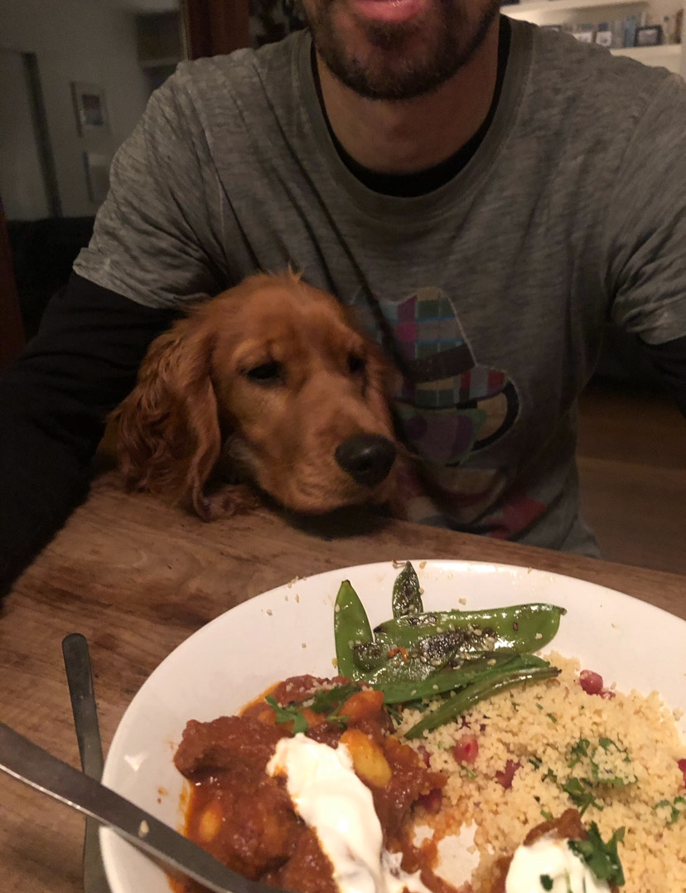

Rufus is a spirited Cocker Spaniel known for his playful nature, floppy ears, and love for outdoor adventures. From the moment he was a puppy, Rufus has brought endless joy to everyone around him.
Rufus is known for his friendly demeanor, boundless energy, and curiosity. He’s always up for a cuddle or a game of fetch. When he’s not playing, you’ll find him snoozing on his favorite couch or enjoying a tasty treat.
